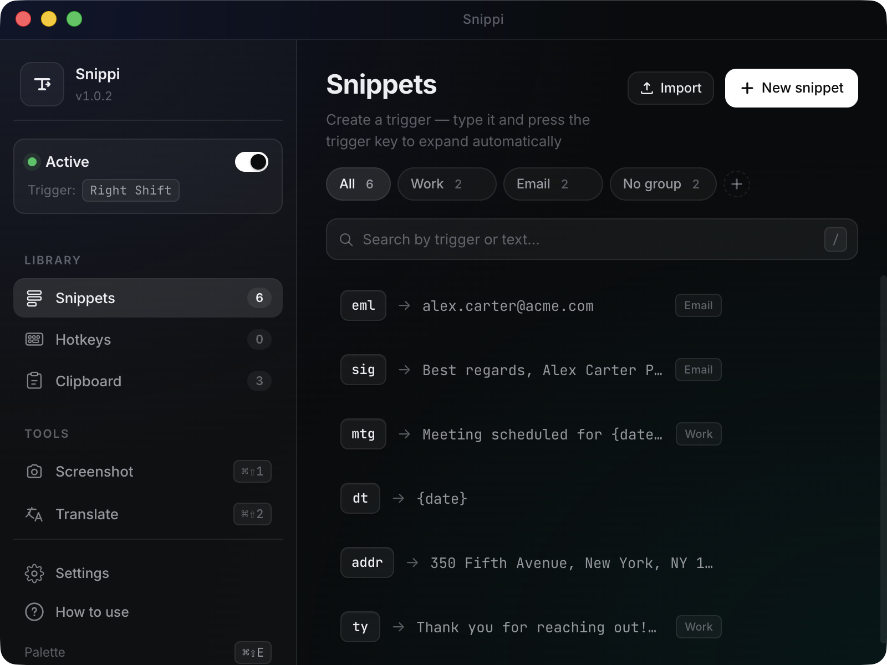
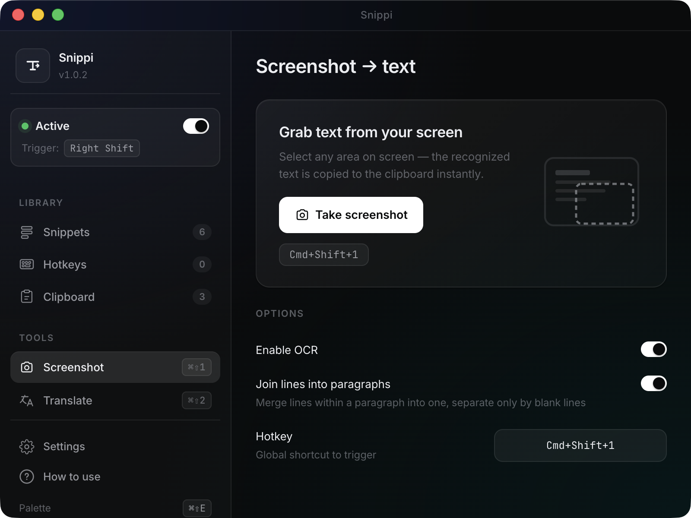
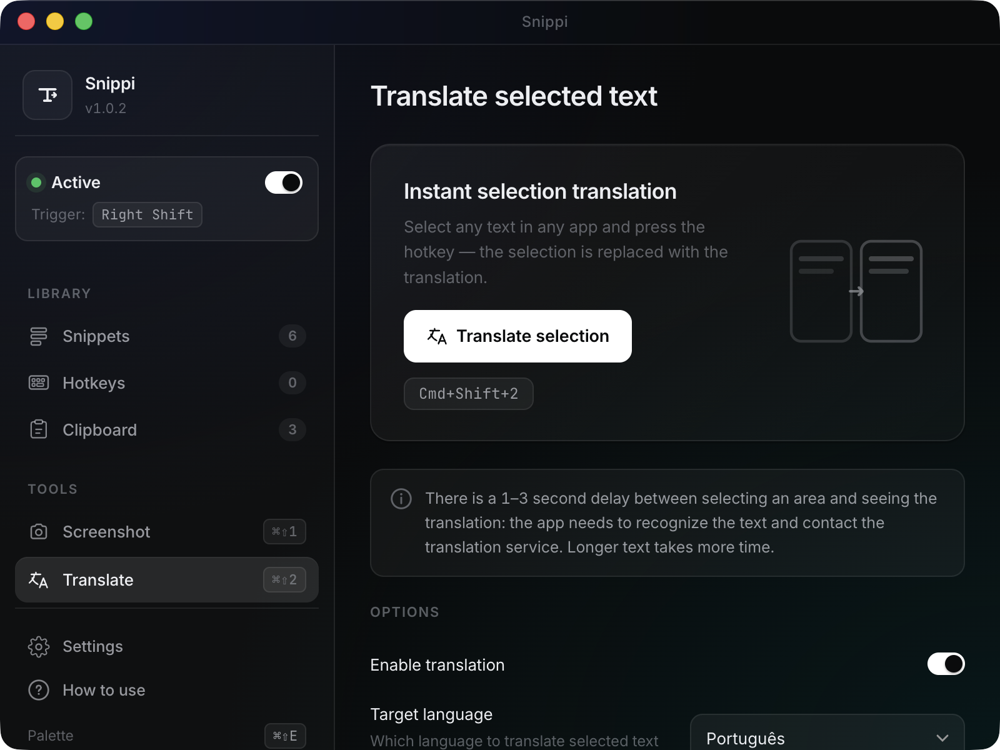

Триггер из двух букв разворачивается в готовое письмо. Скриншот области экрана — и текст уже в буфере обмена. Перевод любого текста с экрана за одну клавишу. Всё локально, без аккаунта, без подписки.
Бесплатно навсегда · Открытый код · Никаких данных не уходит на сервер

Реальный скриншот приложения (macOS)
Каждая мелкая операция, которую ты делаешь сотни раз в день — теперь одна клавиша.
Триггер «gm» разворачивается в «Good morning, hope you're having a great day!». Группы по контексту.
Любая комбинация клавиш — твой текст. Удобно для повторяющихся ответов в чатах и поддержке.
Последние 50 копий всегда под рукой. Палитра по ⌘⇧E — fuzzy-поиск.
Выделил область — текст в буфере. Apple Vision на Mac, Tesseract на Windows/Linux. Офлайн.
Та же область, но текст автоматически переводится на нужный язык. ~80 языков, без ключа.
Не помнишь триггер? ⌘⇧E открывает fuzzy-поиск по всем сниппетам. Как Spotlight.
Создаёшь триггер один раз — пользуешься тысячи. Email, подписи, шаблоны писем, типовые ответы.
Открываешь PDF, видишь нужный фрагмент. Жмёшь ⌘⇧1, выделяешь область — текст уже в буфере. Работает офлайн через Apple Vision.

⌘⇧2 → область → распознавание → перевод → буфер. Один shortcut, один select, готово.

Бесплатно, без регистрации, без подписки. Открытый код на GitHub.
Не знаешь какую версию macOS брать? Меню Apple → Об этом Mac → Чип.
«Apple M…» — arm64. «Intel» — x64.
Подробная инструкция установки — INSTALL.md.
Только распознанный текст для функции «Скриншот → перевод» — он уходит в MyMemory Translated API. Сами скриншоты никогда не покидают компьютер. OCR работает локально через Apple Vision (Mac) или Tesseract (Windows/Linux). Сниппеты, история буфера, статистика — всё локально.
Да. Сниппеты хранятся только на твоём компьютере, никаких облаков. Открытый код позволяет службе безопасности проверить что приложение делает. Поддержка корпоративных шаблонов через экспорт/импорт JSON.
Приложение полностью бесплатное. Подвоха нет — это side-project, который мы развиваем потому что сами им пользуемся. В будущем может появиться платный Pro-тариф с дополнительными функциями (синхронизация между устройствами, премиум-движок перевода), но текущий функционал останется бесплатным навсегда.
TextExpander — это подписка $40/год за text-expanding функции и облако сниппетов. Snippi — бесплатно, локально, и плюс OCR / переводчик / fuzzy-палитра поиска / история буфера, которых у них нет. Зато у TextExpander есть командная подписка для рабочих групп.
Два разрешения в Системных настройках → Конфиденциальность и безопасность: Универсальный доступ (для перехвата клавиш сниппетов) и Запись экрана (для функций OCR / перевод). Оба настраиваются один раз, при первом запуске приложение само подскажет.
Редкая проблема на macOS 26+ (Tahoe) — SystemUIServer иногда «зависает». Решается одним кликом: правый клик по dock-иконке Snippi → меню трея → «Сбросить menu bar». Через секунду иконка вернётся.
Да — github.com/woler1337/snippi. Лицензия MIT, можно форкать, изучать, контрибьютить.
Скачивание занимает 30 секунд. Первый сниппет — ещё минуту.
Скачать Snippi